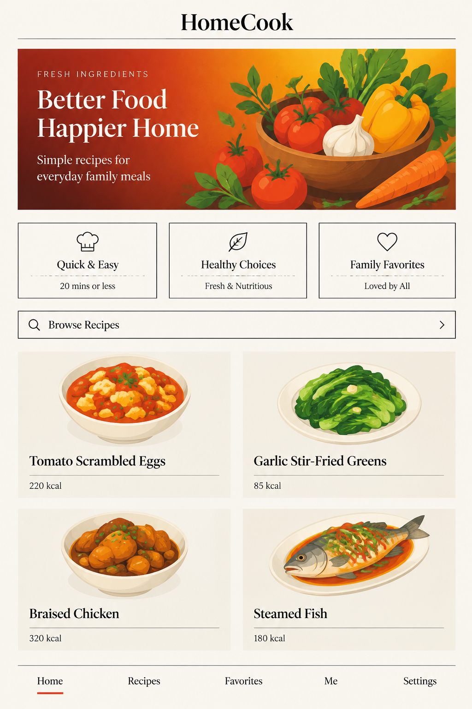
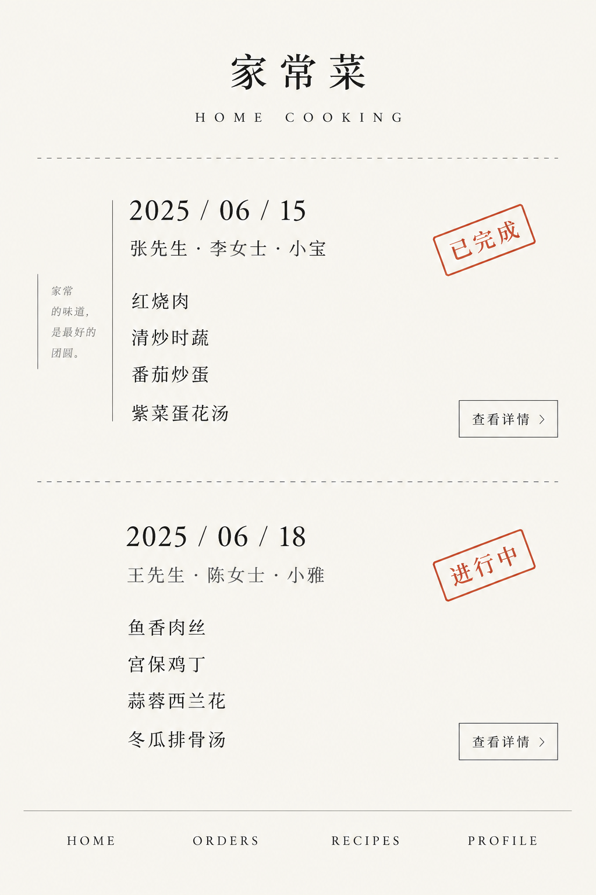
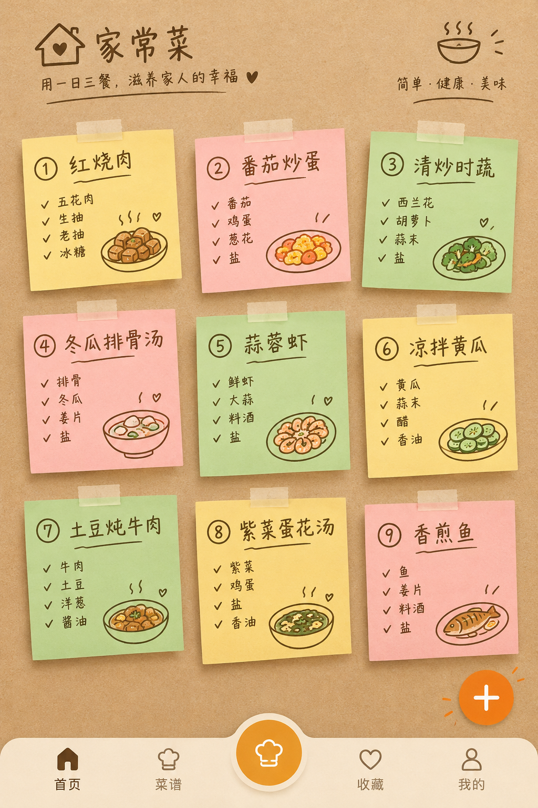
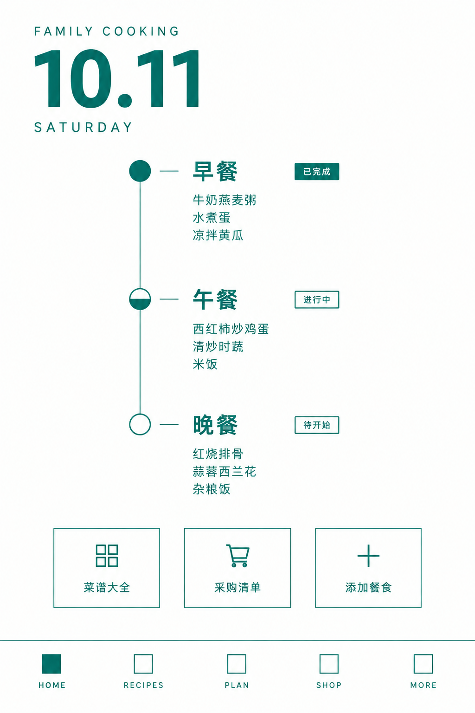
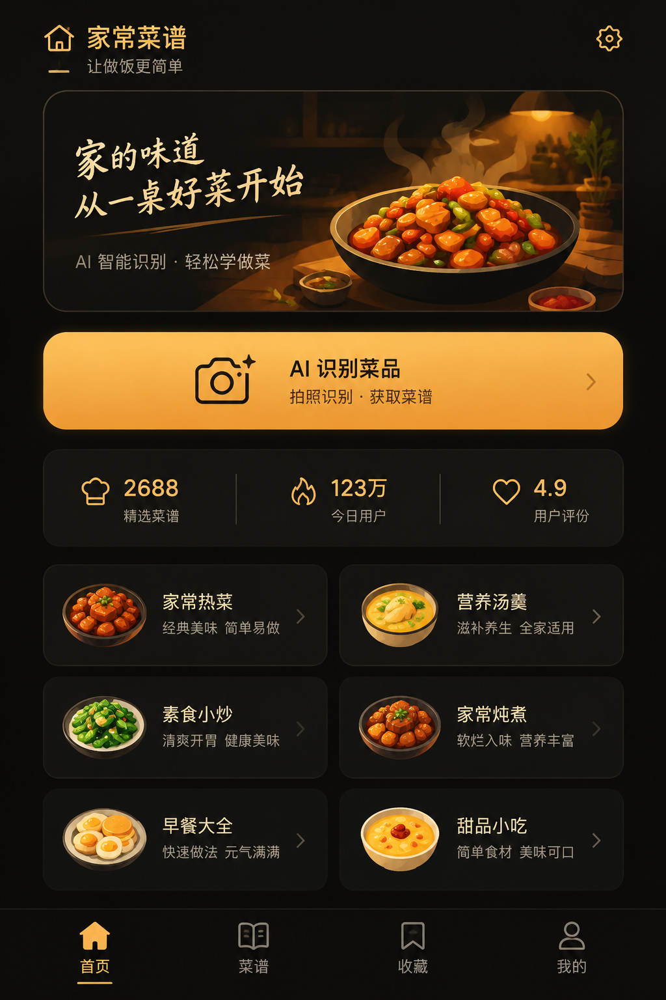
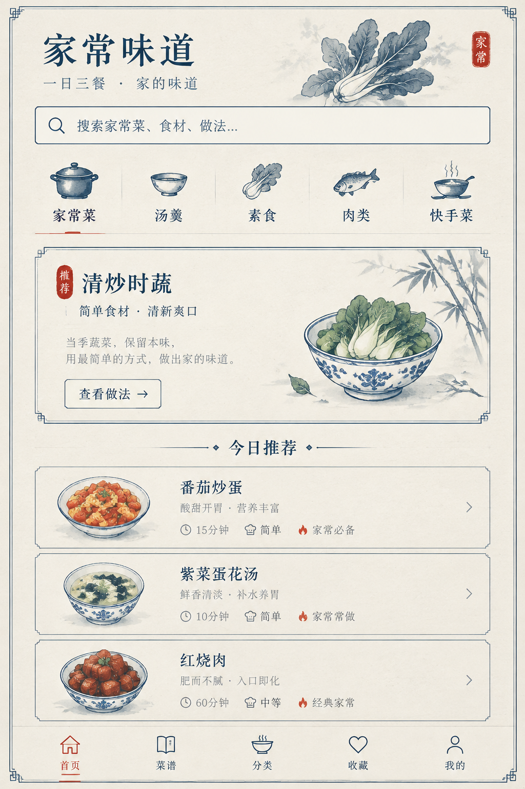

01 · 杂志编辑风「食光」
大字衬线标题 + 整幅食物大图 + 细分隔线 + 双栏网格。靠留白和字重分层，直角、无卡片阴影。适合想做出「讲究、有质感」的调性。

大字衬线标题 + 整幅食物大图 + 细分隔线 + 双栏网格。靠留白和字重分层，直角、无卡片阴影。适合想做出「讲究、有质感」的调性。

同方向的点菜单页：餐厅小票式的虚线分隔 + 旋转的印章状状态标（待确认／已做好）。把「家庭点菜」做出仪式感。

牛皮纸底 + 三列彩色便签（早/午/晚），胶带、手写感标题、圆形大按钮。最有「家庭手账」的温度，适合突出家人协作留言。

纯白 + 单一墨绿强调色，纵向时间轴串起早/午/晚，节点用「实心／半实心／空心」表示进度。信息最清晰、最像工具。

近黑底 + 暖琥珀色，深色分层与微光。有高级感和夜间使用友好度，配合拍照识别入口做视觉重心。

宣纸底 + 墨色 + 一点朱红，双细线框、印章元素、水墨感插画。承接「御膳」这个品牌名的调性，最契合中式家庭厨房。